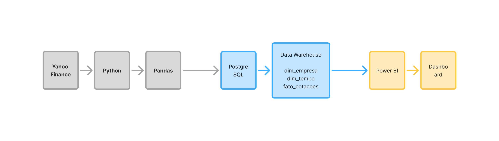
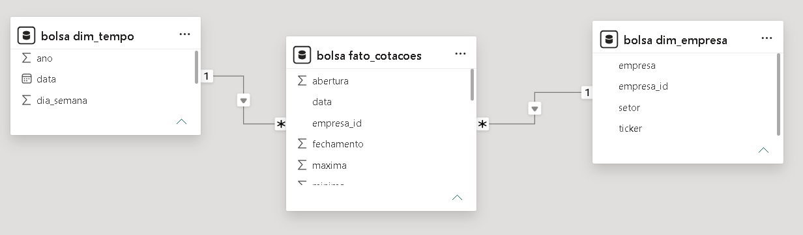
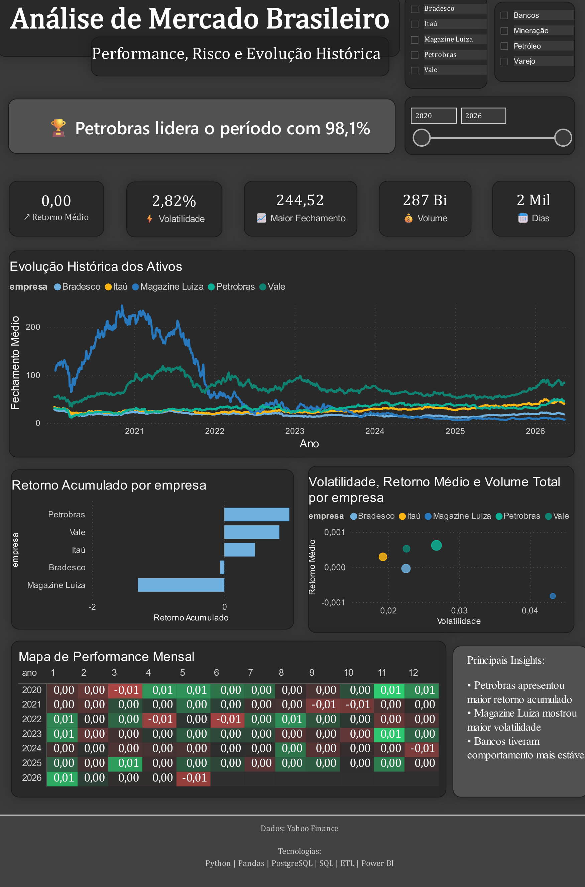

Pipeline completo: Python → PostgreSQL → ETL → Power BI
Sistema completo de Business Intelligence utilizando dados públicos do Yahoo Finance. O projeto contempla coleta automatizada, modelagem SQL em estrela, ETL, análise e dashboard executivo.
Yahoo Finance → Python → Pandas → PostgreSQL → DW → Power BI


